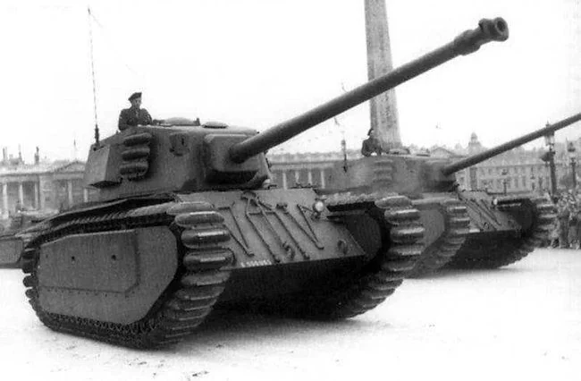

The ARL 44 was a French heavy tank developed immediately after World War II, intended to rebuild France’s armored industry following German occupation. Designed between 1944 and 1946, it symbolized the revival of French tank production and served as a bridge between wartime designs like the Char B1 bis and more modern Cold War tanks. Weighing about 50 tons, the ARL 44 had a crew of five. Early versions were armed with a 90 mm DCA 45 gun, derived from a German 88 mm anti-aircraft gun, giving it strong anti-tank performance for the late 1940s. Secondary armament included machine guns for close defense. Its armor was thick, up to 120 mm on the front, offering solid protection against contemporary threats. Only 60 units were produced, and they served briefly with the French Army before being replaced in the early 1950s by more advanced designs such as the AMX-50 and eventually the AMX-30. The ARL 44 was not revolutionary but played a crucial role in restoring French armored capabilities after the war.

- Characteristics:
- Type: Heavy tank
- Weight: 50 tons
- Crew: 5
- Gun: 90mm
- Speed: 37 km/h